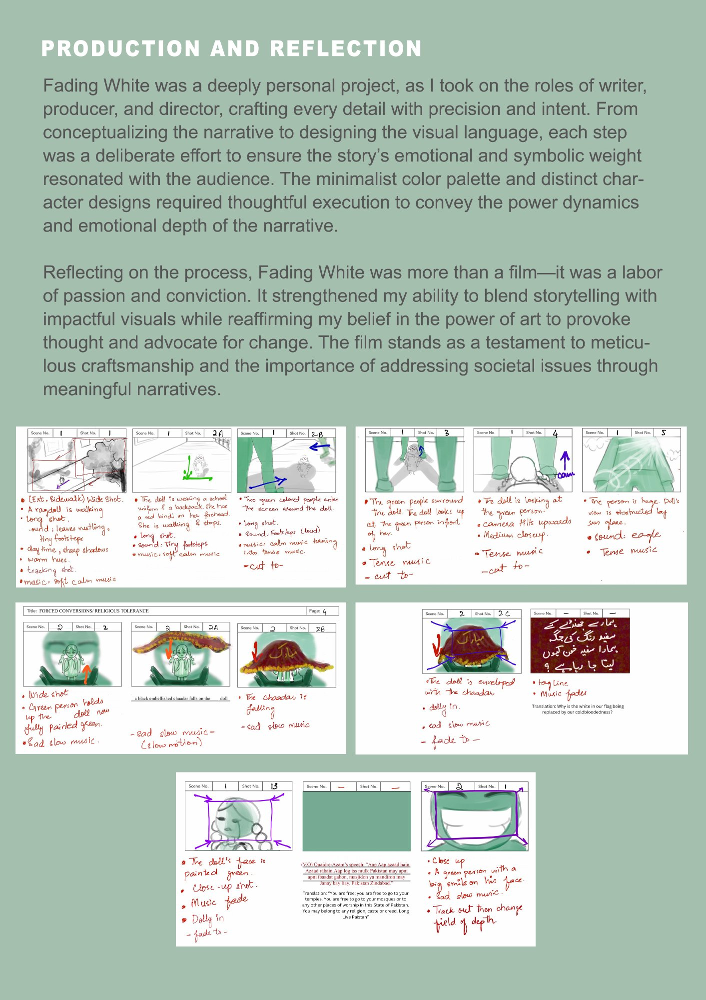
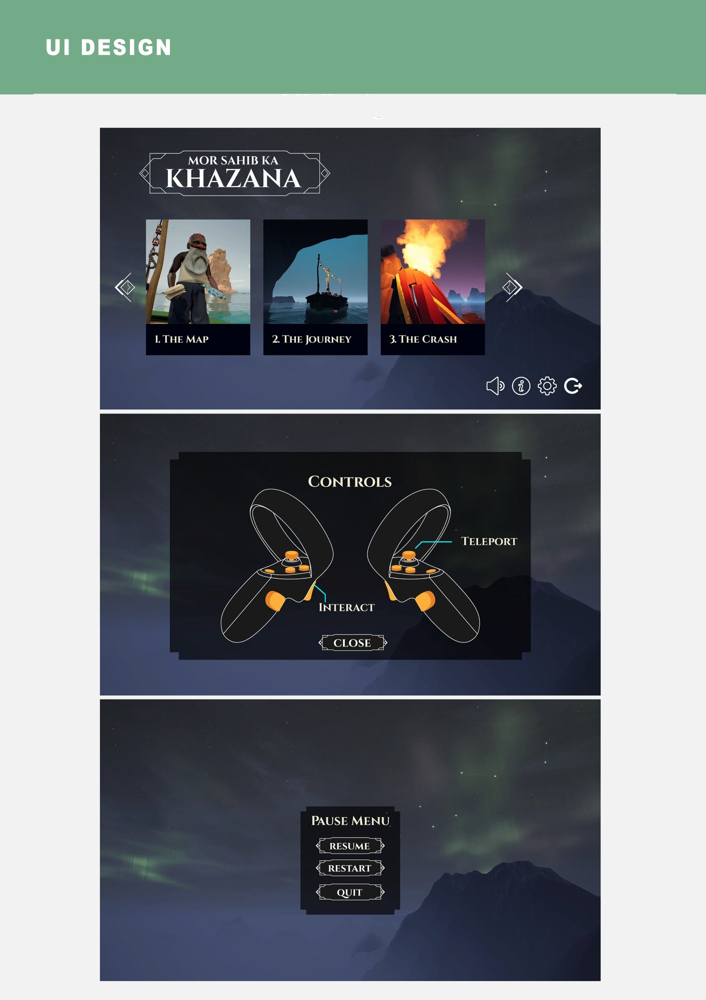

"Androon Lahore is one of the oldest inhabited places on earth. It's also changing faster than anyone is documenting it."
As Lead Photogrammetry Artist at FRAG Games, I designed and built the entire photogrammetry pipeline for this project from scratch. There was no existing workflow to follow — I researched, tested, and developed a system that could take hundreds of photographs taken on the actual streets of Androon Lahore and produce optimised, high-fidelity 3D assets ready for real-time rendering in Unreal Engine 5.
The result is an immersive digital replica of one of Pakistan's most architecturally and culturally significant locations — a platform for education, tourism, and heritage preservation that can reach audiences who could never visit the physical city, and document what exists now for future generations.
The Pipeline
From a photograph to a real-time world.
I developed this four-stage workflow from the ground up. The key challenge was maintaining photographic fidelity throughout — especially the intricate Mughal-era architectural details and the textural complexity of centuries-old brick and timber — while keeping assets performant enough to render in real time.
01
Image Capture
High-resolution overlapping photography of architectural elements and individual objects on-location inside the walled city. Calibration targets used for colour accuracy.
02
Data Processing
RealityCapture used to generate dense 3D point clouds and meshes from image datasets — extracting geometry, normals, and photogrammetric textures automatically.
03
Optimisation
Geometry cleanup, polygon reduction, and texture baking in Blender — balancing visual fidelity with real-time performance requirements for Unreal Engine.
04
Scene Assembly
Full environment build in UE5 — dynamic and baked lighting, volumetric dust, atmospheric fog, foliage, and animated elements bringing every street to life.

The photogrammetry pipeline in action: on-location photography, RealityCapture processing, and optimised 3D assets ready for UE5.
The Result
Lahore's streets, rendered in real time.
The final environment captures the atmospheric density of Androon Lahore — narrow alleys, centuries-old brick facades, hand-painted shopfronts, and the chaotic energy of a city that has been continuously inhabited since before the Roman Empire. Dynamic and baked lighting recreate the quality of light in a city where buildings are so close together that sunlight arrives in narrow, dramatic shafts.

Final Unreal Engine 5 renders — streets, archways, courtyards, and architectural details of Androon Lahore.
Reflection
What I learned.
Pipeline design is design work
Building a photogrammetry workflow from scratch required the same iterative thinking as any design problem — hypothesis, test, refine. The technical and creative challenges were inseparable.
Documentation as preservation
Every asset I captured is also a permanent record of Androon Lahore as it exists in this decade. That responsibility sharpened my attention to detail in ways that a purely technical brief never would have.
The performance-fidelity tension
Real-time rendering forces constant trade-offs between photographic quality and frame rate. Learning to make those calls — what to preserve, what to simplify — is a skill I developed on this project.
What comes next
Guided narrative tours, educational overlays connecting visible architecture to historical context, and an accessibility layer so people who can't visit the physical city can still experience it fully.
Next project
Fading White →
↗